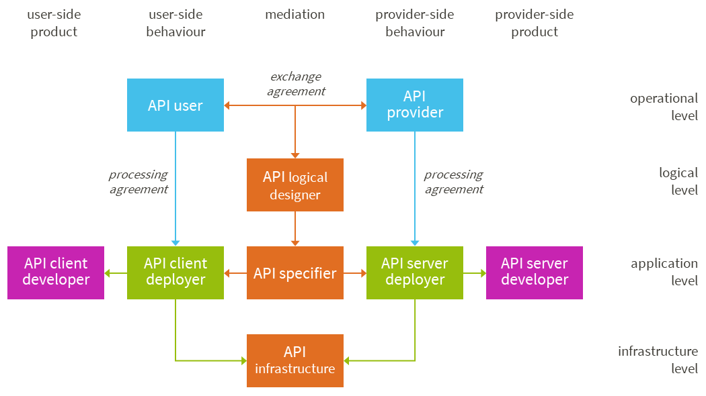
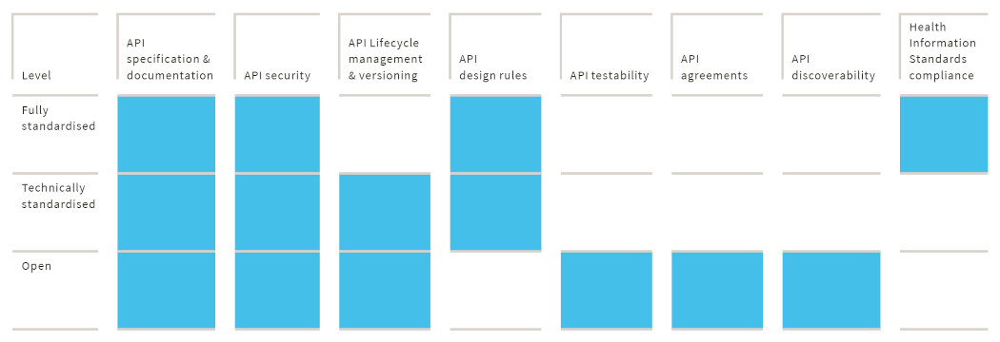

Definitions and scope
What is an API?
The term 'API' refers to both a formal specification and a piece of software conforming to that specification. Both perspectives are used interchangeably, but although an API specification can exist without its actual implementation in software, the reverse is not possible. On the other hand, a specification without any implementation in actual software does not (yet) represent real value. A third possible perspective is the deployment perspective. In this case an API can be viewed as a service that is deployed by some organization to provide specific value for its clients.
No matter the perspective, the purpose of an API is to allow two or more applications to 'talk to each other'. These applications can be located on the same 'machine', or they can be on different remote machines, connected through some kind of network using some kind of communication technology.
Specifications, implementations, and deployments
Due to the different perspectives on what an API is, this specification differentiates between API specifications, API implementations and API deployments.
API specification
An API specification is a formal specification of the API. The specification can be used to construct an API implementation (software) that complies with the specification. It can also be used to develop an API client (more software) that uses the implementation. The API specification can be viewed as a contract between the API implementation and an API client.
API implementation
An API implementation is the software code that implements the specification. It is (part of) a specific software product created by a specific software developer (organization).
API deployment
An API deployment is an instance of the software; the actual service deployed by some organization to provide value for its clients. A specific deployment has a specific endpoint address (a URL in most modern APIs) that API clients use to access the API implementation.
Who uses an API?
API specifications are used by a 'competent developer' to create an API implementation or an API client. A competent developer is a software developer that has experience using the technologies and (healthcare-specific) standards the API exploits and has basic knowledge of the healthcare domain in general and the specific value the API provides.
API implementations are used by API clients. Both are pieces of software that need to 'talk to each other'.
API deployments are used by API client deployments and form a 'service provider'/'service consumer' pair.
What are API requirements?
API requirements are requirements for specifying (API specifications), implementing (API implementations), deploying (API deployments) and using (API clients) an API. In this specification the following conventions are applied when formulating requirements:
- An API requirement SHOULD not overlap with existing rules and regulations. Compliance with rules and regulations is assumed.
- Even more important, it MUST NOT contradict existing rules and regulations.
- It SHOULD be reasonably possible to apply to API requirements. A requirement should not require the impossible.
Many requirements have sub-requirements that conform to the same conventions.
Whenever possible, requirements in this specification are based on or refer to (inter)national requirements and policies, such as the Dutch National API strategy and national API design rules, international standards and RFCs and policies like the NHS Open API Architecture Policy.
Relationship with (Dutch) Health Information Standards
According to the Dutch competence centre for electronic exchange of health and care information (Nictiz), a Health Information Standard is a cohesive specification of:
- A use case or a combination of use cases and interaction patterns
- Dataset(s) used within these interactions
- Information models such as HCIMs (Dutch 'Zorg Informatie Bouwstenen' or ZIBs)
- Terminologies
- Communication standards such as HL7 CDA and HL7 FHIR (profiles)
As such, a Health Information Standard does not include technical details that are necessary ingredients of an API specification, such as:
- API signature and semantics
- Identification and authentication of entities
- Security and transport mechanisms such as addressing
- Other required technical parts of an API specification and API documentation as described in The contents of an API specification and The contents of API documentation
However, many APIs implement (parts of) Health Information Standards. An API is said to 'implement a Health Information Standard' when its specification, implementation and deployment comply with the requirements of that Health Information Standard.
Relationship with the Dutch API library for healthcare
The Dutch API library for healthcare contains API specifications, implementations and deployments that meet the requirements in this specification at a particular level of standardization (see API levels of standardization). The API library promotes the findability of APIs that meet the requirements in this specification.
API lifecycle
The API lifecycle consists of four phases:
- Create: developing the API specification and implementation
- Deploy: Deploying the API so it can be used by API clients
- Deprecate: Mark the API specification, implementation, or deployment as being removed at a future date
- Retire: remove the API specification, implementation and/or deployment
When developing (Create) an API, especially an API specification targeted at the highest level of standardization (see API levels of standardization), it is important to include the viewpoints and insights of all stakeholders. API development is therefore often considered to be a community effort.
It is important to mitigate the effects of API changes on API clients. Mitigation includes clear communication when deprecating and retiring an API, but also includes preventing client applications from breaking due to changes to a deployed API.
This specification includes requirements for all phases of the API lifecycle and includes requirements for lifecycle management and API versioning.
API versioning
Updating an API's version is an important measure to help API clients adapt to API changes. Most APIs use the Semantic Versioning (SemVer) scheme and update the API's major version when introducing breaking changes. Non-breaking changes to the API are often reflected by an update in the API's minor version or patch version.
Breaking changes
A breaking change to an API is any change that can break a client application. Usually, breaking changes involve modifying or deleting existing parts of an API or adding new required parts. A breaking change can take place in an API specification, API implementation and in an API deployment.
Examples of breaking changes are:
- Deleting a resource or operation
- Removing an allowed parameter, request field or response field
- Modifying a resource or method URI
- Modifying a field name
- Adding required query parameters without default values
- Introducing a new validation
- Modifying authorization
- Modifying rate-limiting
- Removing TLS (Transport Layer Security) versions or supported encryption methods
- Modifying data formats, encodings, or compression formats
If the intended functionality of an API (method) changes, this might also break the client application and therefore it is considered a breaking change. For example, if a DELETE request previously used to archive a resource but now hard deletes the resource, the change potentially breaks client functionality that is supposed to archive a resource.
Breaking changes should be avoided whenever possible.
Non-breaking changes
Non-breaking changes are changes that cannot be expected to break a client application. Adding optional parts to an API is never considered a breaking change. Examples of non-breaking changes are:
- Addition of new endpoints
- Addition of new resources or operations to existing endpoints
- Addition of new fields in the following scenarios:
- New fields in responses
- New optional request fields or parameters
- New required request fields that have default values
- Addition of optional query parameters
- Changes to the order of fields returned within a response
- Addition of an optional request header
- Removal of redundant request header
- Changes to the overall response size
- Changes to error messages
Requirement LM007 states that API clients MUST be designed to handle non-breaking changes.
Using a Software Development Kit (SDK) for easy access to APIs
While APIs can be consumed using any platform or programming language, Software Development Kits make it easier to access APIs from a particular platform and/or language of choice. An SDK is usually made up of one or more software libraries, tools, and documentation. For example, Microsoft provides SDKs for accessing Azure APIs from several different platforms, including iOS, Android, JavaScript, and .NET. Another example is the Facebook SDK for integrating Facebook features in games built on the Unity platform.
This specification does not require the provision or use of an SDK to access an API. Nevertheless, this specification does include requirements in case an SDK is provided.
API protocols and API styles
This document specifies requirements for APIs that are built on top of the HTTP protocol. HTTP, or Hyper Text Transfer Protocol, is the protocol that fuels the World Wide Web. It is a high-level protocol that provides mechanisms for communication between clients and servers with requests and responses. The best-known HTTP client is a web browser that is used to communicate with web servers, requesting data and web pages from web servers or sending user input to web servers.
The reason for restricting this specification to HTTP-based APIs is threefold:
- The world has been transitioning to the use of HTTP-based APIs ever since the web 2.0 era at the beginning of the 21st century. Therefore most modern API technologies that are based on the HTTP protocol and legacy technologies, such as CORBA and DCOM, are slowly but surely disappearing from the global arena.
- As a result of this, many (if not most) standards for secure communication are based on or are working in accordance with the HTTP protocol. Examples are the numerous RFCs for authorization (like OAuth 2.0) and authentication (like OpenID Connect), as well as stacks of security protocols such as WS-Security. Other examples include HTTP-header based content negotiation schemes and protocols for distributed identity management such as the Verifiable Credentials HTTP API.
- Modern development tools (as well as developer training materials) are optimized for building applications that leverage the HTPP protocol and the various design patterns and protocols that work with HTTP or are built on top of HTTP.
APIs that use the HTTP protocol are often referred to as WEB APIs. WEB APIs are used to communicate between applications over the internet but can also be used for communication over private networks or even between applications on the same machine. WEB APIs are often divided into two groups: SOAP-based APIs and RESTful APIs. SOAP is a protocol on top of HTTP (amongst others) while REST is an architectural style that leverages plain HTTP commands (verbs) for communication between the API client and the API server. SOAP is often associated with the WEB 1.0 era while today's modern WEB APIs are edging towards the REST architectural style. Nevertheless, both SOAP-based APIs and RESTful APIs coexist and many existing and successful initiatives for health information exchange are based on SOAP APIs. Newer WEB API technologies and styles, like GraphQL and gRPC, are rising constantly.
This specification strives to provide requirements that apply to all flavours of WEB APIs. However, its focus will be on REST APIs simply because of its growing popularity in Health IT. For example, the popular HL7 FHIR API specification is based on the REST architectural style.
A layered typology of APIs
It is common to differentiate between three categories of APIs: system APIs, process APIs and convenience or experience APIs. The Dutch API strategy uses this differentiation which was originally proposed by MuleSoft. This differentiation is based on design principles like 'separation of concerns' and the need for reusability of specifications and software components such as APIs.
System APIs
System APIs are atomic APIs. They expose 'raw' access to data and functionality from a system of record. They cannot be divided into smaller parts without losing usefulness and meaningfulness: you cannot create a meaningful API that exposes the first half of a medical diagnosis or one that creates an outpatient appointment for a particular date without specifying the time. Often, System APIs are exposed for internal use only (see 'Internal and external API usage'). API specifications for System APIs should not be specific to a particular business purpose or 'use case'. Neither should they be specific to a particular type of user or a particular type of system.
In healthcare, system APIs provide access to specific data and functionalities in systems like electronic health records, medical imaging systems, Hospital Information Systems, and many others. Many FHIR resources can be used to standardize system APIs. FHIR resource specifications do not define authorization/access control or the authentication of users and clients, which allows them to be used in many different use cases for several types of users.
Process APIs
Process APIs provide a means of combining data and orchestrating multiple system APIs for a specific business purpose. Note that process APIs can combine system APIs from a single backend system but also from a variety of backend systems.
In healthcare, the difference between system APIs and process APIs becomes clear when you consider that many healthcare business processes require the combining of data and/or functionality from different systems. For example, transferring a patient from a hospital to a homecare provider often requires combining data from different systems, such as an EHR (Electronic Health Record) system and a PACS system amongst others. A process API that supports the transfer process (for example based on the Dutch eOverdracht specification) uses the system APIs of these 'systems of record' to expose a single coherent dataset to the API client.
The latter being a system deployed by (or on behalf of) the homecare provider. Process API specifications for healthcare often define specific methods for authenticating clients/users and define specific authorization/access control methods.
Convenience or experience APIs
The third category of APIs, convenience APIs or experience APIs, are tailored to a specific kind of usage. For example, an experience API could be tailored to mobile devices and provide mobile-friendly ways of formatting and paginating data. Experience APIs use System APIs or process APIs but format the output in such a way that it caters to the needs of a specific (type of) API client.
In healthcare, experience APIs are often representations of business data and/or functionality to a specific Healthcare Information Exchange (HIE) standard, such as a FHIR, or IHE XDS. For example, the previous 'eOverdracht' transfer example could be expressed using two experience APIs: one based on FHIR notifications and compositions and the other on IHE DSUB notifications and XDS document exchange.
This specification covers all types of APIs and sets out requirements for reusing APIs of a lower layer.
Consequences for API design and specification
The layered approach to APIs has consequences for API design and specification in healthcare. Specifications of APIs that support transferring patients (process APIs), should reuse systemlevel API specifications that provide access to specific data. API standards for transferring patients should reuse pre-existing API standards for accessing atomic data, such as atomic FHIR resources.
API specifications for a specific (type of) client system, such as a FHIR client, should be harmonized with existing specifications for process APIs.
Exchange patterns
APIs can be used to PUSH data from a client to a server or to PULL data from a server by a client. PUSH and PULL are examples of 'exchange patterns'. Other examples are the NOTIFY-PULL pattern (server notifies the client using an API exposed by the client after which the client pulls data from the server using an API exposed by the server) and the BROADCAST pattern (server broadcasts data to all clients that are interested in receiving that data).
This specification strives to provide requirements that are applicable to all possible exchange patterns.
Exchange paradigms
It is common to differentiate between four different paradigms for exchanging data between systems: operations, messaging, exchanging documents and exposing resources.
Operations
The operations paradigm, or Remote Procedure Call (RPC) paradigm, allows a client to execute some code on a server by passing it the operation name and required (and optional) arguments. After processing the code, the server returns some content to the client. The content can be anything, from a stream of data to a static document (see document paradigm) or a single scalar value. The SOAP protocol is designed around the operations paradigm.
Messaging
Messaging is associated with the 'PUSH' exchange pattern and facilitates automated transactions between systems. System A sends a message to System B with a specific intention and just enough information to justify that intention. Interaction typically occurs without human interaction: a message invokes a state change (such as a workflow state change or changing specific data) within a target system. Typical examples in healthcare are HL7v2 messages and FHIR messages.
Document exchange
Document exchange is of value in healthcare IT. A document is created by an author and represents a snapshot of available information at a specific time and place: documents are 'stable'. A document can be (digitally) signed by a human, stating that the document is approved by its 'verifier'. A document is first and foremost intended for human consumption (even if it's exchanged by electronic means), but it can be processed by automated systems and automated decisions can be based on its contents, especially if the document has a standardized and machine-readable (structured) format. Note that the document paradigm can be combined with the operation, messaging and resource paradigms, because documents can be the result of an operation, can be transmitted through a message and can be requested from a 'documents' resource.
In (Dutch) healthcare, documents have significant value in exchanging data between healthcare organizations. A document can be used to send data between healthcare organizations in accordance with the Dutch WGBO regulation: a healthcare professional transmits specific data (the document) to a specific healthcare provider with a specific purpose (e.g., a transfer or consultation) in accordance with healthcare quality standards or best practices. In such cases data can be transmitted without the specific consent of the patient.
Resources
As opposed to documents, resources are dynamic. A resource exposes data in response to a specific request and its content changes over time and is dependent on the specifics of the request. Resources are often associated with the PULL and NOTIFY PULL exchange patterns, because a dynamic resource can't be PUSHED to another system. In healthcare, FHIR resources are the most popular example of the resource paradigm. Because of their dynamic nature, exchange of resources across organizations often requires specific consent of the patients concerned.
This specification covers all four paradigms and sets out requirements for when to use which paradigm.
Consequences for API design and specification
Different paradigms are suitable for different scenarios. API design and specification should consider that APIs designed using the resource paradigm make the API client responsible for defining the content of the data exposed by the API. The resource paradigm is very flexible from the perspective of the consumer (the API client) but consequently, the healthcare organization responsible for the data has less control over what data is exchanged in what situation.
Internal and external API usage
Many policies, like the Dutch API strategy and the NHS Open API Architecture Policy, distinguish between internal and external APIs. Indeed, European and Dutch regulations do impose such a distinction but distinguishing internal from external APIs might not always be easy and has nothing to do with technology.
Processing personal data is always subject to privacy regulations such as the European GDPR (General Data Protection Regulation). When data is exchanged between organizations, special rules apply. These rules depend on the relationship between those organizations, like the relationship between a (GDPR) 'data controller' and 'data processor'. 'Internal' and 'External' are not a property of the APIs themselves but indicate different use of (sometimes the same) APIs. Although different intended uses may affect API design, our approach is to treat internal or external API design alike as much as possible.
In this specification 'internal API usage' is restricted to data exchange within a single data controller. 'External API usage' on the other hand, covers the exchange of data (using APIs) between data controllers (and their respective data processors). External API usage is subject to special regulations such as the Dutch Wabvz and the Dutch NEN 7512 standard.
This specification covers both internal and external APIs.
Unrestricted and restricted API usage
APIs can be used to provide unrestricted access to data and functionality. These kinds of APIs don't require authorization to access API functionality and/or data and hence don't need to know the identity of the person or organization using the API. APIs that provide unrestricted use are sometimes referred to as 'Anonymous APIs' or as 'Open Data APIs'.
Especially in healthcare, most APIs expose (sensitive) personal data and hence do require authorization. These APIs restrict access to data and/or functionality to specific applications, organizations and/or users. Hence, they need to identify and authenticate API users. This is called 'restricted usage'. APIs that provide 'restricted usage' are sometimes referred to as 'identified APIs'.
In real life, even APIs that provide unrestricted use to end-users during operation, do have some restrictions in place that apply to developers. For many APIs special onboarding procedures are in place. Only after onboarding are developers provided with a so-called API key that gives them (their software) access to the API. This allows the organization that provides the API to prevent (deliberate or undeliberate) misuse. It also allows for better statistical analysis of API use.
This specification covers both the restricted and unrestricted usage of APIs.
Roles involved with the development, exploitation and use of APIs
APIs are created by developers and are consumed by software created by (other) developers. Sometimes the party responsible for creating and maintaining an API is also responsible for deploying the API. At other times, the development and deployment roles are fulfilled by different parties. The same is true for API clients. Sometimes systems that consume an API, so-called API clients, are developed and deployed by one party, sometimes different parties are responsible for developing and deploying an API client system.
Most of the time, the party responsible for developing an API is also responsible for specifying the API. In the case of standard APIs, such as the Dutch MedMij APIs, specifications for APIs are the responsibility of a (National) standards body or 'API specifier', in this case Nictiz. Sometimes, the API specifier is also responsible for verifying API conformance to the specification, sometimes designated 'API conformance verifiers' (such as notified bodies) fulfil such a role.
Because separate roles have different responsibilities throughout the lifecycle of an API, most API requirements are specific to a role. This specification recognizes nine roles involved with the creation, deployment and use of APIs. The following diagram sets out these nine roles.

Each role is briefly introduced in the following table. Requirements in this specification are assigned to one or more roles through the 'applicable roles' attribute of each requirement.
| API role | Responsibilities |
|---|---|
| API client deployer | Technical responsibilities for employing an API, as deployed by the API server deployer, and specified by the API specifier, thus implementing the final responsibilities of the API user |
| API client developer | Technical responsibilities for supplying software for the API client deployer |
| API infrastructure | Technical responsibilities for conveying specified APIs between API clients and API servers |
| API logical designer | Responsibilities for logically specifying both data and the operations to be implemented in the API |
| API provider | End responsibilities for providing the value and meaning of an API, as agreed with API users |
| API server deployer | Technical responsibilities for deploying an API, as specified by an API specifier, thus implementing the end responsibilities of the API provider |
| API server developer | Technical responsibilities for supplying software for the API server deployer |
| API specifier | Responsibilities for technically specifying the API so that an API server deployer knows what to deploy and an API client knows what to employ |
| API user | End responsibilities for using the value and meaning of an API, as agreed with the API provider |
The contents of an API specification
An API specification MUST contain enough information for a competent developer to create an API implementation or an API client without further information. This includes:
- Identification and authentication of people, organizations, and machines This does not only apply to the technical standards and specifics used to authenticate entities but also to the identifying attributes that are used and how to obtain and secure them to create a network of trust.
- Authorization/access control This does not only apply to the technical standards and specifics used to authorize access to APIs, but also to the semantics of access tokens and requests for access tokens, such as the permitted values for permissions (OAuth 2 scopes) and expiration requirements.
- Protecting integrity and confidentiality This applies to any specifics on protecting integrity and confidentiality at both transport and message levels, including specifics on the cryptographic algorithms, key distribution and PKIs used.
- Addressing This applies to specifics on addressing API endpoints and mechanisms used to distribute (updates to) addresses.
- Content encoding This applies to specifics on content encoding such as the compression algorithms used and character encoding.
- Content formatting Specifics on content formatting such as the use of MTOM/XOP and BSON but also healthcare-specific (data) formats.
- Exchange patterns and exchange paradigms used
- API signature and semantics All actions (methods) that are available through the API MUST be covered, as well as the legitimate data structures return (error) codes (the API signature), Including a full specification of all API requests and responses.
- Use cases How to (and how not to) use the API in specific use cases.
- References to other specifications Most specifications reuse other specifications such as RFCs created by IETF or W3C or Dutch information standards created by Nictiz.
Creating and maintaining the API specification is the responsibility of the API specifier role.
The contents of API documentation
API documentation includes, but is not limited to, the API specification. Other important parts of API documentation include:
- How to obtain and use test tooling
- API onboarding and access policies
- Usage restrictions and guidelines
- Service level agreements
- Technical specifics for a particular deployment, such as the use of private networks instead of public internet
- Addresses of API endpoints
These parts of API documentation are the responsibility of the API server deployer. In many cases, the API server deployer works together with the API server developer or refers to documentation the API server developer supplies.
API levels of standardization
Almost all APIs are based on standards such as communication standards (like the HTTP standard) and formatting standards such as XML. Nevertheless, many APIs use different communication technologies, different documentation formats and testing tools, different methods for discoverability, different data formats, unique styles and patterns and different 'content', for what seems to be similar functionality and purpose. These differences complicate the use of APIs.
This specification provides requirements for APIs with various levels of standardization. Even at the lowest level of standardization, the 'Open API level', requirements are set out that harmonize API design, development, deployment, and usage. At the middle level, the 'Technically standardized level', requirements aim at achieving technical harmonization while at the highest level, the 'Fully standardized level', requirements aim at achieving software interoperability.
Requirements in this specification are assigned to one or more levels of standardization through the 'applicable levels' attribute of each requirement. Valid values for this attribute are 'OA' (Open API), 'TSA' (Technically Standardized) and 'FSA' (Fully Standardized).
'Open API' standardization level
The NHS Open API Architecture Policy uses the following definition of 'Open APIs':
'Open APIs are those APIs that have been exposed to enable other systems to interact with that system, and those APIs have been sufficiently documented so that the available functionality is discoverable, fit for purpose and re-usable.'
This specification embraces the NHS definition of 'Open APIs'. It is important to disambiguate from the OpenAPI Initiative (formerly Swagger) that standardizes how APIs are described.
At the 'Open API' level, the only technical requirements are that:
- APIs are based on the HTTP communication protocol (see API protocols and styles)
- APIs use common and state-of-the-art technologies and standards
- APIs comply to common security and privacy guidelines and regulations
Other than that, API developers are free to use the technology of their choice and are free to create APIs using their own data formats and 'content'. Even the purpose of these 'Open APIs' is defined by the organization creating them.
Requirements at this level aim to increase reusability, discoverability and quality, without restricting APIs to specific technical and/or semantical standards. This preserves agility and increases the speed at which APIs become available to API users and innovators, while at the same time providing some level of harmonization and transparency. Typical requirements at this level concern (transparency of) documentation, testability and onboarding procedures.
'Technically standardized API' standardization level
Requirements at this level aim to increase the technical harmonization of APIs. Examples of requirements at this level are design rules, requirements for versioning and lifecycle management, security requirements, formatting requirements and transport requirements.
Many of these requirements reflect a technical choice, such as using JSON, BSON or XML. Other examples include the compression methods that are allowed (such as GZIP and DEFLATE or the less common LZ4), what security models and standards are allowed (such as OAuth 2 and WS-Security) and what cryptographic methods are allowed for assuring confidentiality and integrity.
In Dutch Healthcare, no single party has the authority to enforce these kinds of choices and many technical choices and standards coexist. This specification aims to harmonize technical choices by referring to specific (inter)nationally recognized standards, guidelines and best practices. Sources for these references may include, but are not limited to:
- W3C standards
- Internet Engineering TaskForce (IETF) RFCs
- OASIS standards
- International health-IT standardization efforts and standards such as HL7 and IHE
- The Dutch National Cyber Security Centre (NCSC) security guidelines
- Dutch NEN norms
- Dutch 'afsprakenstelsels' such as MedMij
- Technical agreements between health-IT industry partners such as made by the Dutch Taskforce Samen Vooruit (TSV, now part of NLDigital) and the NUTS foundation
For an API to comply with the requirements at this level it MUST also comply with the requirements at the 'Open API' standardization level.
'Fully standardized API' standardization level
Requirements at this level aim to increase software interoperability by setting requirements for standardizing all parts of APIs.
In Dutch Healthcare, no single party is designated to approve API standards. However, many national and international organizations are concerned with developing API specifications and testing their implementations. Examples of such organizations include, but are not limited to, the Royal Netherlands Standardization Institute 'NEN', the Dutch MedMij foundation, the international HL7, IHE and openEHR foundations and the Dutch NUTS community.
An API is fully standardized when:
- Its complete specification is approved as a standard by a standardization organization
- Its implementation is verified by that organization during a formal test or qualification process
Because different standardization organizations can create different standards for the same purpose and use case, 'fully standardized' does not equal 'the only allowed way of doing things'. However, all members of the standardization organization approve the API specification and promote its implementation in real life systems. The Dutch API library for healthcare will include 'competing' fully standardized APIs from different standardization organizations, as long as:
- They fulfil the requirements for fully standardized APIs
- Their organizations are supported by a substantial number of Health IT stakeholders, such as Health IT vendors and/or healthcare providers
- Their organizations provide a formal test- or qualification process for API implementations, such as the IHE connectathon and the Nictiz MedMij qualification tests
In exceptional cases, the Dutch government can force the use of specific standards, such as API standards. The upcoming Wegiz legislation provides the Dutch government with the means to force the use of specific standards for information exchange, including the use of specific fully standardized APIs. Other means to promote the use of specific fully standardized APIs above others are enforcing their use through common purchasing conditions.
For an API to comply with the requirements at this level it MUST also comply with the requirements at the 'Open API' and 'Technically standardized' standardization levels.
API requirement categories
All requirements in this specification fall under a specific category. This specification recognizes nine requirement categories:
- API specification & documentation
- API security
- API lifecycle management & versioning
- API Design Rules
- API testability
- API onboarding
- API agreements
- API discoverability
- Health Information Standards compliance
Some categories contain requirements on a particular level of standardization (such as the 'Open API standardization level'), others contain requirements on two or even all standardization levels.

Levels of standardization and requirement categories. Blue cells indicate the availability of requirements for a particular level and category combination.